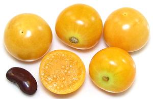
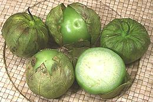
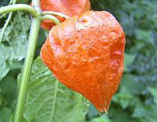
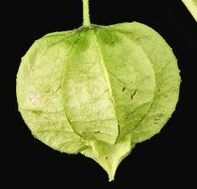
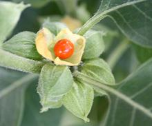

SAFARI
Users
History & General Discussion
The decorative Chinese Lantern is native to Southern Europe through Japan, but it is South America Physalis varieties that first became significant as food and are now grown in a number of countries.
The Peruvian Ground Cherry was being grown as a crop in South Africa by 1807. Still a commercial crop there, it is used for canned fruit and made into jams. Now carrying the name "Cape Gooseberry", it was carried to New Zealand and Australia and is grown on a fairly large scale in both those countries. It is, however, still very rare in North America.
The Tomatillo, on the other hand, doesn't seem to have caught on much outside the Americas, but it's so common here it's even sold by the big supermarket chains - though you'll find far better prices at local and ethnic markets.
Varieties
Cape Gooseberry
 [Peruvian Ground Cherry, Golden Berry, Uchuva, Inca Berry; Capuli, Aguaymanto, Tomate Sylvestre, Uchuba (Peru); Capuli, Motojobobo Embolsado (Bolivia); Uvilla, Uchuva, Vejigón, Guchavo (Colombia); Capuli, Amor en Bolsa, Bolsa de Amor (Chile); Topotopo, Chuchuva (Venezuela); Cereza del Peru (Mexico); Physalis peruviana]
Native to Chile and Peru, this nightshade berry is now most noted for commercial production in South Africa, Australia and New Zealand. It is an incidental crop in South America and so far rarely seen in North America. Cape Gooseberry can be grown most places where tomatoes can be grown but warmer is better since the plants can take only a couple degrees of frost. Mature fruits are between 1/2 and 1 inch diameter. The largest of the photo specimens, from Colombia, was 0.9 inch. They were purchased from a large multi-ethnic market in Los Angeles for 2016 US $7.97 / pound. The husks are large and loose, unlike the tight husks of the tomatillo, so they are sold with husks removed.
These fruits are slightly sticky, like tomatillos and have a flavor
similar to a mix of strawberry, pineapple and tomato. The main commercial
uses of Cape Gooseberry are as canned fruit and for making jam, but
fancy restaurants often use whole fruits as an exotic garnish. In homes
they are made into pies and are eaten whole as fruit. The berries, left
in their husks, store well, over a month in cool dry conditions.
Caution: unripe fruit are toxic so eat no green berries.
Tomatillo
 [Mexican Green Tomato, Mexican Ground Cherry, Husk Tomato, Jamberry, Tomate de Cascara, Tomate de Fresadilla, Tomate Milpero, Tomate Verde, Miltomate, Physalis ixocarpa alt Physalis philadelphica]
Tomatillos are native to Mexico and were well developed as a crop by the Aztecs. Our first evidence of cultivation is from around 800 BCE but it was probably grown far earlier than that.
Tomatillos are harvested when medium to light green and used at that stage of ripeness. The variety commonly sold in Southern California is yellow when fully ripe but there are varieties that ripen to red and purple. Much used in Mexican green sauces tomatillos are both tart and sweet. There is no satisfactory substitute.
The photo specimens are typical, averaging around 2-1/4 inches diameter
and 2-3/4 ounces, but they can be much smaller in some markets. The largest
I've seen was 3-1/3 inches diameter and 6-5/8 ounces.
Details & Cooking.
Chinese Lantern
 [Bladder-cherry, Winter Cherry, Japanese Lantern, Hozuk (Japan), Physalis alkekengi]
Native to the Old World from Southern Europe, across southern
Asia to Japan, this Physalis is edible but not much used as food, at
least in recent times. It is a common decorative plant and can tolerate
much colder winters than most Physalis can. When the paper-like husk
dries out, it becomes lace-like, and the now visible ripe red berry
drops into the bottom of it.
Photo by TeunSpaans distributed under license
Creative Commons
Attribution-ShareAlike 3.0 Unported.
Groundcherry
 [Common Groundcherry, longleaf groundcherry, wild tomatillo; Charoka, Shuma Charoka (Pueblo); Physalis longifolia | similar Physalis hederifolia]
Native to North America from Eastern Canada through much of the United
States and into northern Mexico, this yellow-green berry was used by
American Indians, particularly the Pueblos. The berries were eaten
fresh, cooked and dried. Fresh they have been described as tasting like
an "effervescent, under-ripened strawberry", and dried as similar to
a mix of raisin and dried cranberry. Today, tomatillos are used for
most of the traditional recipes that had used this berry, but trials
have shown it is easy to grow and produces flavorful fruit.
Photo by Sam Droege distributed under license Creative
Commons
Attribution 2.0 Generic.
Ashwagandha
 [Winter Cherry, Poison Gooseberry, Indian ginseng; Withania somnifera]
This plant is grown in drier regions of India, and to a lesser extent in
Nepal, China and Yemen. Its berries can be used as a vegetarian
substitute for rennet in cheese making, but it is more famous for its
use in Ayurvedic medicine. Medicinally, it is the leaves that are used,
not the berry. This plant has recently been adopted by the herbal
supplement industry as an inexpensive substitute for
Ginseng. It is particularly promoted for
treatment and prevention of cancers, diabetes, stress, inflammation and
neurological conditions.
Photo by Wowbobwow12 distributed under license Creative
Commons
Attribution-ShareAlike v3.0 Unported.